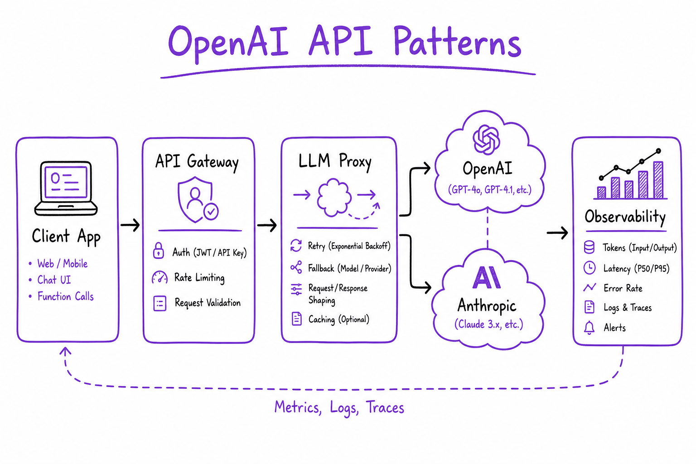
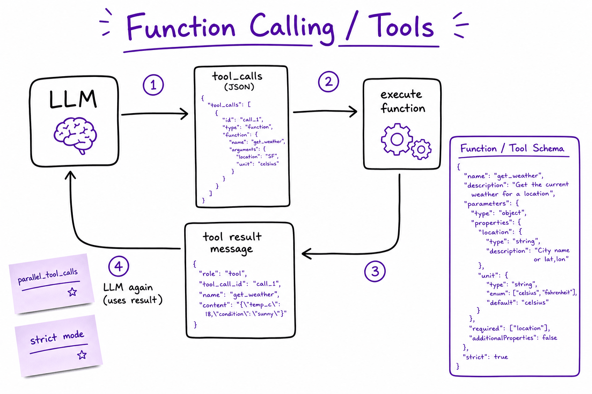
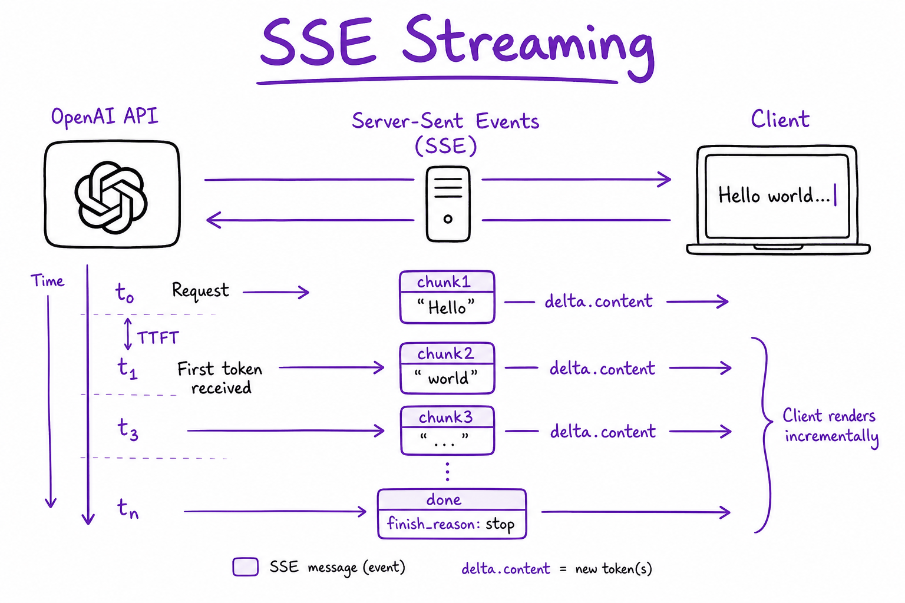
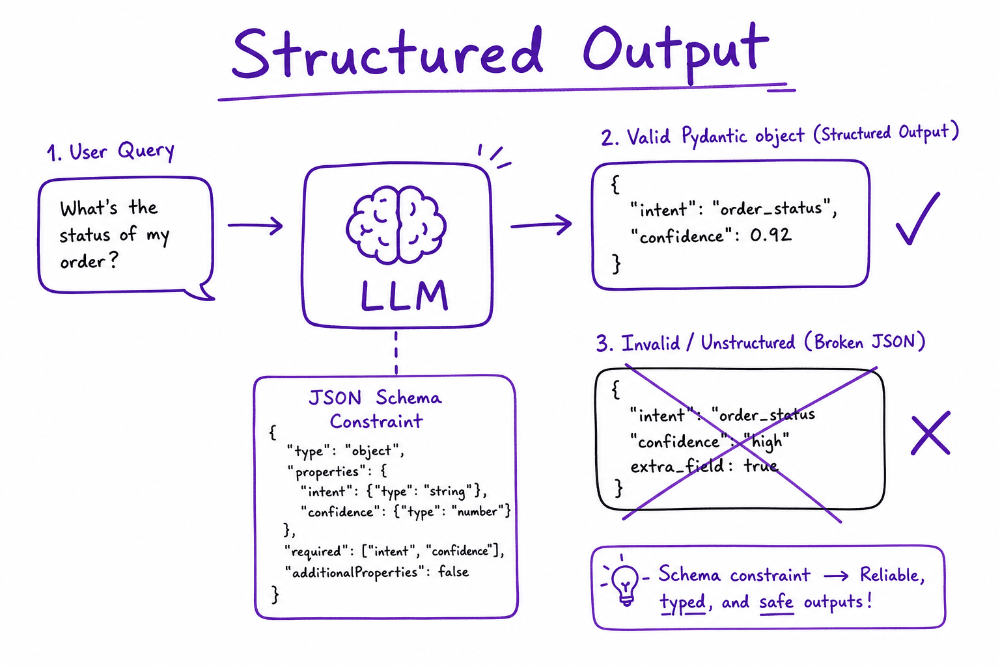

Calling a model // LLM fundamentals
The API call end to end: messages, roles, streaming, tool calls, errors and retries, across providers.
01 — At a glance
Production patterns for chat completions, streaming SSE, structured JSON output, tool/function calling, embeddings, batch API, retries, and multi-provider fallbacks. The API layer every RAG and agent stack builds on.

Request flow: client → auth + rate limit → chat.completions (stream or JSON) → optional tool loop → response. Typical latency: 200–800 ms TTFT streaming; Batch API ~50% cost discount for offline jobs.

Function calling: the model returns tool_calls, your code runs the function, and the result goes back as a tool message for the next turn.
02 — New words
| Word | Meaning |
|---|---|
| Message | One entry in the list you send: a role plus content. The whole request is an ordered list of messages. |
| Role | Who a message is from: system (standing instructions), user, assistant (the model's earlier replies) or tool (a tool's result). |
| Stateless API | The provider remembers nothing between requests. Every call must carry everything the model should see. |
| Input / output tokens | Tokens you send (prompt plus history) and tokens the model generates. Billed separately; output usually costs several times more per token. |
max_tokens | The cap on output tokens for one call (OpenAI's current name is max_completion_tokens). Hitting it cuts the answer off mid-sentence. |
| Finish (stop) reason | Why generation ended: natural end, length cap, a tool call, or a safety filter. Must be checked on every response. |
| Streaming (SSE) | Receiving the answer as a series of small events over one open HTTP connection (server-sent events), instead of one response at the end. |
| TTFT | Time to first token: from sending the request to receiving the first piece of output. What users perceive as responsiveness. |
| Tool call | A structured request from the model ("call get_order_status with A1001") that your code executes and answers. |
| RPM / TPM | Rate limits: requests per minute and tokens per minute allowed for your account or key. Exceeding either returns HTTP 429. |
| Exponential backoff with jitter | Waiting longer after each failed attempt (0.5 s, 1 s, 2 s, …) with randomness added so many clients do not retry in lockstep. |
| Idempotent | Safe to repeat: doing it twice has the same effect as once. Reads are; "refund the order" is not, unless you make it so. |
| Prompt caching | The provider reuses the processed state of a prompt prefix it has seen recently, charging less and responding faster for it. |
| Backoff + jitter | Exponential retry delay + randomness on rate limits/flaky calls. |
Quick reference
03 — What & Why
Problem: LLM apps need a stable contract for chat, tools, embeddings, and structured data — with streaming UX, cost control, and provider failover. Raw HTTP to OpenAI/Anthropic is the foundation; frameworks like LangChain wrap these calls.
Functional
- Multi-turn chat with system/user/assistant/tool messages
- Stream tokens to UI (SSE) for perceived low latency
- Force JSON / Pydantic schema via structured outputs
- Native tool calling loop (model proposes → you execute → feed results back)
- Embeddings for RAG ingest and query (same model both sides)
- Batch API for offline bulk jobs at reduced cost
Non-Functional
- Retries — exponential backoff on 429/5xx; honor
Retry-After - Observability — log
usagetokens, model, latency_ms, trace_id - Latency — TTFT <500 ms for gpt-4o-mini class; total time scales with output tokens
- Security — API keys server-side only; never in browser bundles
Position in stack: Below orchestration (LangGraph, CrewAI) and above vector storage (Vector search & databases). Token and context fundamentals: What an LLM is.
04 — Core Concepts
| Term | Definition | Gotcha |
|---|---|---|
| Chat Completions | messages[] in → assistant message out | Not the legacy Completions API (single prompt string) |
| Messages API | Anthropic equivalent; system param separate | Content blocks array; tool_use / tool_result blocks |
| TTFT | Time to first token in streaming mode | User-perceived latency; log separately from total duration |
| Tool call | Model emits function name + JSON args in assistant message | You execute; return tool role messages with tool_call_id |
| Structured output | response_format json_schema or Pydantic parse | Still validate server-side — models can drift on edge cases |
| Batch API | Async file-based jobs, ~50% cheaper than realtime | 24h SLA; not for user-facing chat |
| finish_reason | stop, length, tool_calls, content_filter | length means truncated — retry or warn user |
05 — API / Interface Surface
OpenAI Python SDK v1+ uses a unified client. Always log response.usage for cost attribution.
from openai import OpenAI
client = OpenAI() # OPENAI_API_KEY env
resp = client.chat.completions.create(
model="gpt-4o-mini",
messages=[
{"role": "system", "content": "You are a helpful assistant."},
{"role": "user", "content": "Summarize RAG in 3 bullets."},
],
temperature=0.2,
max_tokens=512,
)
print(resp.choices[0].message.content)
print(resp.usage.prompt_tokens, resp.usage.completion_tokens)Anthropic Messages API
import anthropic
cl = anthropic.Anthropic()
msg = cl.messages.create(
model="claude-sonnet-4-20250514",
max_tokens=1024,
system="Answer concisely from provided context only.",
messages=[{"role": "user", "content": "Hello"}],
)
# msg.content[0].text | Method / Param | Purpose |
|---|---|
chat.completions.create | Sync chat; blocking until complete |
stream=True | SSE chunks; iterate for token UX |
tools=[...] | Function schemas for native tool calling |
response_format | JSON mode or strict json_schema |
embeddings.create | Batch text → vectors for RAG |
invoke(Command(resume=...), config) | Continue after interrupt |
Quick reference: message roles
| Role | When | Notes |
|---|---|---|
| system | Instructions, persona | Keep stable; version tag in metadata |
| user | End-user input | Treat as untrusted; delimit injected docs |
| assistant | Model output | May include tool_calls array |
| tool | Function result | Must include tool_call_id matching request |
06 — When to Use / When NOT
| Pattern | Use direct API? | Alternative |
|---|---|---|
| Full control, any language | Yes | LangChain Runnable wrappers |
| Streaming chat UX | Yes — stream=True | Blocking only for batch/cron |
| Structured routing JSON | Yes — Pydantic parse | Regex on free text (fragile) |
| Multi-step agent with HITL | Maybe — raw tool loop works | LangGraph for checkpointing |
| Nightly eval / bulk embed | Yes — Batch API | Realtime completions (expensive) |
| Simple fixed RAG chain | Maybe | LCEL or LlamaIndex query engine |
07 — Architecture
+------------------+
| Client / UI |
+--------+---------+
|
v
+------------------+
| API Gateway |
| auth, rate limit|
+--------+---------+
|
v
+------------------+
| LLM Proxy |
| retry, fallback |
+--------+---------+
+--------------+--------------+
v v v
OpenAI Anthropic Azure OpenAI
\ | /
+-------------+-------------+
v
+------------------+
| Observability |
| tokens, trace_id |
+------------------+ 08 — Deep Dive: Streaming

SSE streaming: client receives delta chunks until finish_reason stop; map to WebSocket/SSE for UI.
Streaming improves TTFT (time to first token). Users see progress immediately; total generation time is unchanged. Always handle edge cases in the stream loop.
stream = client.chat.completions.create(
model="gpt-4o-mini",
messages=messages,
stream=True,
)
for chunk in stream:
choice = chunk.choices[0]
delta = choice.delta.content
if delta:
yield delta # forward as SSE event to browser
if choice.finish_reason:
# stop | length | tool_calls | content_filter
handle_finish(choice.finish_reason)FastAPI SSE bridge
from fastapi.responses import StreamingResponse
async def token_stream():
for delta in openai_stream():
yield f"data: {json.dumps({'token': delta})}\n\n"
return StreamingResponse(token_stream(), media_type="text/event-stream")- Stream tool-call argument fragments; buffer until JSON complete before execute
- On
finish_reason=length, offer “continue” or truncate gracefully - Log TTFT separately from total latency for SLO dashboards
09 — Deep Dive: Structured Output

JSON schema / Pydantic structured output: model constrained to valid object shape for routing and extraction.
Use structured output for intent routing, entity extraction, and API response shaping. Constrained decoding raises valid-JSON rate vs prompt-only “return JSON”.
from pydantic import BaseModel, Field
class Route(BaseModel):
intent: str = Field(description="support | billing | sales")
confidence: float
needs_human: bool
resp = client.beta.chat.completions.parse(
model="gpt-4o-mini",
messages=[{"role": "user", "content": user_text}],
response_format=Route,
)
route: Route = resp.choices[0].message.parsed
# Always: route.model_validate(...) or try/except on Nonejson_schema mode (strict)
response_format={
"type": "json_schema",
"json_schema": {
"name": "route",
"strict": True,
"schema": Route.model_json_schema(),
},
}Interview tip: Structured output reduces parse failures but is not a substitute for server-side validation and authorization checks on extracted fields.
10 — Deep Dive: Tool Calling
Tool calling lets the model request side effects (search, SQL, APIs). You remain in control: the model proposes; your code executes. Orchestration layer: LangGraph ToolNode; framework wrapper: LangChain bind_tools.
tools = [{
"type": "function",
"function": {
"name": "search_kb",
"description": "Search internal knowledge base by semantic query",
"parameters": {
"type": "object",
"properties": {
"query": {"type": "string"},
"top_k": {"type": "integer", "default": 5},
},
"required": ["query"],
},
},
}]
messages = [{"role": "user", "content": "Refund policy?"}]
while True:
resp = client.chat.completions.create(
model="gpt-4o-mini", messages=messages, tools=tools)
msg = resp.choices[0].message
if not msg.tool_calls:
break
messages.append(msg)
for tc in msg.tool_calls:
result = run_tool(tc.function.name, json.loads(tc.function.arguments))
messages.append({
"role": "tool",
"tool_call_id": tc.id,
"content": json.dumps(result),
})See Tool calling for schema design, allowlists, and security. For graph-level control use LangGraph ToolNode + HITL interrupts.
Complete runnable tool loop
import json
from openai import OpenAI
client = OpenAI()
TOOLS = [{"type": "function", "function": {
"name": "get_weather", "description": "Get weather for a city",
"parameters": {"type": "object", "properties": {
"city": {"type": "string"}}, "required": ["city"]}}}]
def get_weather(city: str) -> dict:
return {"city": city, "temp_f": 72, "conditions": "sunny"}
DISPATCH = {"get_weather": lambda args: get_weather(args["city"])}
def run_agent(user_msg: str, max_rounds: int = 8) -> str:
messages = [{"role": "user", "content": user_msg}]
for _ in range(max_rounds):
resp = client.chat.completions.create(
model="gpt-4o-mini", messages=messages, tools=TOOLS)
msg = resp.choices[0].message
if not msg.tool_calls:
return msg.content or ""
messages.append(msg.model_dump(exclude_none=True))
for tc in msg.tool_calls:
args = json.loads(tc.function.arguments)
result = DISPATCH[tc.function.name](args)
messages.append({"role": "tool", "tool_call_id": tc.id,
"content": json.dumps(result)})
raise RuntimeError("max tool rounds exceeded")Interview tip: Dispatch table + schema validation + max rounds is the minimum production pattern. Add idempotency keys for mutating tools.
11 — Deep Dive: Embeddings API
emb = client.embeddings.create(
model="text-embedding-3-small",
input=["chunk one", "chunk two"], # batch in one call
dimensions=1536, # optional Matryoshka truncation
)
vectors = [d.embedding for d in emb.data]- Same model at ingest and query — never mix vector spaces
- Batch array input to reduce HTTP round trips; respect token limits per request
- Store vectors in Vector search & databases; see Choosing an embedding model for model selection
- Cache hot query embeddings (TTL 5–60 min) keyed by question hash
12 — Deep Dive: Batch API & Retries
Retries (429 / 5xx)
import time, random
def call_with_retry(fn, max_attempts=5):
for attempt in range(max_attempts):
try:
return fn()
except RateLimitError as e:
wait = (2 ** attempt) + random.uniform(0, 1)
retry_after = getattr(e, "retry_after", None)
time.sleep(retry_after or wait)Batch API workflow
- Build JSONL: one request per line (
custom_id,method,url,body) - Upload file → create batch job → poll status
- Download results JSONL; map
custom_idback to eval cases
Multi-provider: abstract behind LiteLLM or a thin router; fallback gpt-4o → claude-sonnet on outage. Log which provider served each request.
# LiteLLM router example
import litellm
resp = litellm.completion(
model="gpt-4o-mini",
messages=messages,
fallbacks=["claude-sonnet-4-20250514", "gpt-4o"],
num_retries=3,
timeout=90,
)Anthropic tool loop (content blocks)
import anthropic
cl = anthropic.Anthropic()
resp = cl.messages.create(
model="claude-sonnet-4-20250514",
max_tokens=1024,
tools=anthropic_tools,
messages=[{"role": "user", "content": "Weather in NYC?"}],
)
# Handle resp.content blocks: text vs tool_use vs tool_result
The full explanation
13 — The question
Every LLM feature, however elaborate, bottoms out in an HTTP request: a list of messages goes in, generated text (or a request to run a tool) comes out. The call looks trivial in a tutorial and causes most of the operational pain in production: conversations whose cost grows with every turn, answers silently cut off by a length cap, retries that turn a provider hiccup into an outage, and rate limits that fail on launch day.
The interview questions:
- What is actually sent and received? If the API is stateless, how does a chatbot remember the conversation, and what does that cost?
- Why stream, and what does streaming change in your code?
- Which errors do you retry, how, and how do you avoid making an outage worse?
- How do you size for rate limits and set timeouts?
The running example. "Shopbot" is the support assistant for an online store. Its system prompt, including two tool definitions, is 800 tokens. A typical customer message is 60 tokens; a typical reply is 200. Customers ask about orders, so Shopbot calls a get_order_status tool. The store has a sale next week, and traffic will triple. We will follow one conversation through every step, then the sale.
14 — Step 1: one request, a list of messages
Here is Shopbot's first call, in the shape most providers use (this one is OpenAI-style Chat Completions; Step 10 covers the differences):
{
"model": "MODEL_ID",
"max_completion_tokens": 500,
"temperature": 0.3,
"messages": [
{"role": "system", "content": "You are Shopbot, the support assistant for ... (800 tokens)"},
{"role": "user", "content": "Hi, where is my order A1001? It was meant to arrive Monday."}
],
"tools": [ {"type": "function", "function": {"name": "get_order_status", "...": "..."}} ]
}
And the response, trimmed:
{
"choices": [{
"message": {"role": "assistant", "content": null,
"tool_calls": [{"id": "call_1", "type": "function",
"function": {"name": "get_order_status", "arguments": "{\"order_id\": \"A1001\"}"}}]},
"finish_reason": "tool_calls"
}],
"usage": {"prompt_tokens": 860, "completion_tokens": 24}
}
Three things to notice. First, the roles are not decoration. On the provider's side, the messages are rendered into one token sequence using the model's chat template, with special tokens marking where each role's text begins and ends; the model was trained on that format, so it treats system text as standing instructions and user text as the request. (What belongs in each part is in Anatomy of a prompt.) Second, the reply carries a finish_reason: here the model stopped because it wants a tool run, not because it finished. Third, usage tells you exactly what you were billed. Log it on every call; it is the ground truth for cost.
15 — Step 2: stateless means you resend the conversation
The provider forgets the request the moment it responds. To continue the conversation, Shopbot appends the assistant's reply and the next user message to the list and sends the whole list again. The "memory" lives in your application.
That has a cost shape worth computing. With an 800-token system prompt, 60-token user turns and 200-token replies, turn \(n\) sends
\[ \text{input}_n = 800 + 260\,(n - 1) + 60 \]tokens: the system prompt, all \(n-1\) earlier exchanges, and the new question.
| Turn | 1 | 2 | 3 | 5 | 10 |
|---|---|---|---|---|---|
| Input tokens | 860 | 1,120 | 1,380 | 1,900 | 3,200 |
A 10-turn conversation sends 20,300 input tokens in total, though only 3,200 distinct tokens of text exist. Total input grows with the square of the number of turns, because each turn resends all earlier turns: \(n\,(S + U) + (U + A)\,n(n-1)/2\) for system prompt \(S\), user turn \(U\) and reply \(A\): here \(10 \times 860 + 260 \times 45 = 20{,}300\). At illustrative prices of $3 per million input tokens and $15 per million output tokens, the conversation costs about $0.061 for input and $0.030 for 2,000 output tokens: $0.091, with input already two-thirds of the bill after ten turns.
Three consequences:
- Long conversations get expensive and slow, and eventually exceed the context window. Production chat apps trim old turns, summarise them, or move facts into retrieved memory; see Memory & context engineering.
- You can edit history. Since you send it, you can drop a failed tool call, redact personal data, or replace ten turns with a summary. The model only knows what is in the list.
- Prompt caching fits this pattern exactly. Each turn's input is the previous turn's input plus a little more, so the prefix is identical. Step 9 puts a number on it.
Some providers offer server-side conversation state (a conversation ID instead of the full history). That moves storage, not cost: the model still processes the whole history on every turn.
16 — Step 3: length caps and finish reasons
Every call ends for a reason, and each reason needs different handling:
| Meaning | OpenAI Chat Completions | Anthropic Messages | What your code does |
|---|---|---|---|
| Natural end | stop | end_turn | Use the answer. |
Hit max_tokens | length | max_tokens | The answer is truncated. Never parse it as JSON; retry with a higher cap, ask for a shorter answer, or continue. |
| Wants a tool | tool_calls | tool_use | Run the tool(s), append results, call again (Step 5). |
| Hit a stop sequence | stop | stop_sequence | Expected if you set one. |
| Safety filter | content_filter | refusal (newer models), or a refusal in the text | Show a safe fallback; log for review. |
The most common silent bug in LLM code is ignoring length. A reply cut at 500 tokens reads fine for 499 tokens and then stops mid-word; a JSON object cut off is invalid; a summary cut off omits its conclusion. Size max_tokens from the longest legitimate output (measure it), not from a guess, and alert when the length finish rate rises.
17 — Step 4: streaming, and what it changes
Generation is sequential: the model produces one token, appends it, and runs again. A 200-token reply at an illustrative 60 tokens per second takes 3.3 seconds to generate, after a time to first token of, say, 0.5 seconds. Without streaming, the customer stares at a spinner for 3.8 seconds. With streaming, words appear at 0.5 seconds and keep coming at reading speed. Total time is identical; perceived latency falls by a factor of about seven. For any interface a human watches, stream.
Mechanically, streaming is server-sent events: the HTTP response stays open, and the server writes lines of the form data: {json} separated by blank lines, ending with a final event (data: [DONE] in OpenAI's format, a message_stop event in Anthropic's). Each event carries a small delta: a few characters of text, a fragment of a tool call's arguments, or at the end, the finish reason and usage.
What changes in your code:
- You assemble the answer yourself. Text deltas concatenate. Tool-call arguments also arrive in fragments and are only valid JSON once the call is complete; parse at the end, not per delta.
- Errors can arrive mid-stream. A 200 status code at the start does not mean success. The stream can break or deliver an error event after 100 tokens. Decide whether to retry the whole call (the user has already seen half an answer) or show what you have plus an error.
- Validation moves to the end. You cannot check a citation or a schema until the whole answer exists, so output guardrails either buffer (losing the latency benefit) or run on sentence chunks as they complete.
- Every hop must pass the stream through. Reverse proxies and serverless platforms that buffer responses silently turn streaming back into waiting. Test TTFT through the real path, not against the provider directly.
18 — Step 5: a tool call is two round trips
The model never runs a tool. It returns a structured request, your code runs it, and you send the result back in a new call. For Shopbot's question:
- Call 1: system prompt, tools, user message (860 input tokens). The model returns
finish_reason: tool_callswithget_order_status({"order_id": "A1001"})and an ID,call_1. - Your code validates the arguments, checks that this customer may see order A1001, runs the lookup, and gets
{"status": "shipped", "eta": "2 days"}. - Call 2: everything from call 1, plus the assistant's tool-call message, plus a
toolmessage with the result andtool_call_id: call_1. The model writes the answer for the customer.
The ID pairs results with requests, which matters when the model asks for several tools at once (parallel tool calls); every requested call needs a result message, or the next request is rejected. Each tool round trip resends the whole history, so a question needing three sequential lookups costs four calls. Wrap the loop in a hard iteration cap. Designing the tool schemas themselves is covered in Tool calling; the loop as an agent, in The agent loop.
19 — Step 6: what fails, and which failures to retry
Calls to a hosted model fail more often than calls to a typical internal service: providers run near capacity, generation takes seconds, and long requests meet more network trouble. Classify every failure by one question: will the identical request succeed if I send it again?
| Status / error | Meaning | Retry? |
|---|---|---|
| 400 Bad Request | Malformed request, invalid schema, or context too long | No. Fix the request (for context length: trim history). |
| 401 / 403 | Bad or unauthorised key | No. Alert. |
| 404 | Unknown model name (often a retired model) | No. Alert. |
| 408, timeout, connection reset | Network or slow generation | Yes, with backoff. |
| 429 Too Many Requests | Your rate limit, or provider-wide capacity | Yes, after Retry-After if given. |
| 500, 502, 503 (and Anthropic's 529 "overloaded") | Provider-side failure | Yes, with backoff; fail over if it persists. |
| Error event mid-stream | Generation failed partway | Usually yes, from the start. |
Retrying a 400 is the classic waste: the same malformed request fails five times, slower. Retrying an LLM call itself is safe, because generating text has no side effects. Retrying the tools it triggered may not be, which Step 7 addresses.
20 — Step 7: retries that do not make things worse
A naive retry loop resends immediately. When a provider is overloaded, every client doing that multiplies the load at the worst moment. Three rules fix it.
Back off exponentially, with jitter. Wait \(\min(\text{cap}, \text{base} \cdot 2^{k})\) before retry \(k\), but pick the actual delay uniformly between zero and that value ("full jitter"), so a thousand clients that failed together spread their retries out instead of returning as one wave. With base 0.5 s and cap 8 s, the ceilings for four retries are 0.5, 1, 2 and 4 seconds (7.5 s in total); a fifth would hit the 8 s cap. With full jitter the expected wait is half of each ceiling. If the server sends Retry-After, wait at least that long: it knows when capacity returns.
Retry at one layer only. If Shopbot's API layer makes up to 3 attempts, its LLM client makes up to 3 attempts per call, and the SDK underneath does the same, one user request can become \(3^3 = 27\) provider calls during an incident. Pick one layer, usually the one closest to the provider, and turn retries off elsewhere (most SDKs retry by default; set their max_retries deliberately).
Retry within a deadline. A customer will not wait 40 seconds. Give each user request a total time budget, say 20 seconds, and stop retrying when the next wait would exceed it; then fail over to another model or provider, or degrade (link to a human, a cached answer). Fallback chains and circuit breakers are covered in Reliability engineering.
Idempotency for tools with side effects. Suppose call 2 times out after Shopbot's tool loop has already issued a refund. A blind retry of the whole turn can run the tool loop again and refund twice. Give each tool execution an idempotency key (for example, conversation ID plus tool-call ID) and have the tool refuse a key it has already completed. Retry the model call freely; retry side effects only through idempotency keys.
21 — Step 8: rate limits, capacity and timeouts
Shopbot's key allows, say, 500 requests per minute and 400,000 tokens per minute. Which binds? An average Shopbot call is about 3,000 input tokens (mid-conversation, with history) plus up to 200 output tokens. Some providers count the requested max_tokens toward the limit check, not just what was generated, so an inflated cap uses up quota you never consume. At 3,200 tokens per call, \(400{,}000 / 3{,}200 = 125\) calls per minute. The token limit binds long before the 500-request limit.
How many calls are in flight at once? Little's law: concurrency equals arrival rate times time in system. At 125 calls per minute (2.08 per second) and 4 seconds per call, about 8.3 calls are open at any moment. That tells you your connection pool and worker count.
Now the sale. Traffic triples, to around 375 calls per minute: three times the token budget. Without a plan, two-thirds of calls get 429s, retry, and add load. With a plan:
- Ask for a higher limit before the sale. Limits are usually raised on request or by usage tier.
- Shape the traffic yourself. A client-side token bucket that admits calls at the budget rate and queues the rest turns 429 storms into short, predictable waits.
- Spend fewer tokens per call. Trim history to the last few turns plus a summary; cap
max_tokensrealistically. - Spread across capacity. A second region, provider or smaller model for simple intents, behind the same interface.
Timeouts need two numbers. A connect timeout of a few seconds catches network trouble. The read timeout must exceed the longest legitimate generation: with max_tokens 500 and a slow-day decode speed of 30 tokens per second, generation can take about 17 seconds, plus the time to first token. A 10-second read timeout would kill valid calls and then retry them, burning quota. With streaming, prefer an idle timeout (no event for N seconds) over a total one.
22 — Step 9: the cost levers at the API layer
Prompt caching. Shopbot's turns share a growing prefix (Step 2). With caching, the provider stores the processed prefix and charges a fraction for reusing it. If cached input costs an illustrative 10% of the normal input price, the 10-turn conversation's input changes as follows. Turn 1 is processed in full (860 tokens). On each later turn, everything up to the end of the previous request is read from cache, and only the 260 new tokens (the previous reply plus the new question) are processed at full price. That is \(860 + 9 \times 260 = 3{,}200\) full-price tokens and 17,100 cached ones: input falls from $0.061 to about $0.015, and the whole conversation from $0.091 to about $0.045. (This ignores any cache-write surcharge and the minimum cacheable length, which an 860-token first turn may not meet.) The rules: the prefix must match byte for byte, so put static content (system prompt, tool definitions) first and never put a timestamp at the top; caches expire after minutes of inactivity; some providers require you to mark cache points explicitly and charge extra to write a cache entry; and there is usually a minimum prefix length.
Batch APIs. For work nobody waits on (nightly classification of yesterday's tickets, evaluation runs), providers accept a file of requests and return results within hours, typically at a substantial discount. Wrong for Shopbot's chat; right for its weekly "summarise all complaints" job.
The basics. Set max_tokens; route simple intents ("where is my order") to a smaller model; do not resend tool definitions the turn does not need. Pricing and routing in depth: Cost & latency and Tokens, context & cost.
23 — Step 10: the same call across providers
The concepts are shared; the field names are not. The differences that break code when switching:
| OpenAI Chat Completions | Anthropic Messages | |
|---|---|---|
| System prompt | A message with role system (or developer) | A top-level system field, not a message |
| Output cap | Optional; current name max_completion_tokens (max_tokens is deprecated and rejected by reasoning models) | max_tokens, required |
| Usage in a stream | Only if you pass stream_options={"include_usage": true}; arrives in a final chunk with no choices | In the message_start and message_delta events |
| Response content | A string in message.content | A list of typed blocks (text, tool_use, …) |
| Tool definition | {"type": "function", "function": {name, description, parameters}} | {name, description, input_schema} |
| Tool arguments | A JSON string to parse | An already-parsed object in input |
| Tool result | A message with role tool and tool_call_id | A tool_result block inside a user message, with tool_use_id |
| Message order | Flexible | Alternating user and assistant turns (consecutive same-role messages are combined) |
OpenAI also has a newer Responses API with different shapes, and many open-model servers (vLLM, Ollama) expose an OpenAI-compatible endpoint, which is why that format is the de facto lingua franca. Most teams wrap calls in one internal interface: messages and tools in a neutral format, adapters per provider, plus the retry, timeout, logging and usage accounting from this lesson in one place.
24 — In code: the loop, retries and a stream parser
A runnable model of the whole lesson against a fake provider: two transient failures (a 429 with Retry-After, then a 500), backoff with jitter, a tool round trip, and parsing a server-sent-events stream.
import json, random # --- A fake provider, so the client logic runs offline ----------------------- class RateLimited(Exception): # HTTP 429 def __init__(self, retry_after=None): self.retry_after = retry_after class ServerError(Exception): pass # HTTP 500/502/503/529 class BadRequest(Exception): pass # HTTP 400: never retry ORDERS = {"A1001": {"status": "shipped", "eta": "2 days"}} failures = [RateLimited(retry_after=2.0), ServerError()] # first two calls fail def fake_chat(messages, tools): if failures: raise failures.pop(0) last = messages[-1] if last["role"] == "user": # model decides to call a tool return {"finish_reason": "tool_calls", "tool_calls": [ {"id": "call_1", "name": "get_order_status", "arguments": '{"order_id": "A1001"}'}]} result = json.loads(last["content"]) # last message is the tool result return {"finish_reason": "stop", "content": f"Your order has {result['status']} and should arrive in {result['eta']}."} # --- Retries: backoff with full jitter, honour Retry-After, respect a deadline - def with_retries(fn, max_attempts=5, base=0.5, cap=8.0, deadline=30.0, rng=random.Random(7)): waited = 0.0 # simulated clock: no real sleeping for attempt in range(1, max_attempts + 1): try: return fn(), attempt, waited except BadRequest: raise # a malformed request will not improve except (RateLimited, ServerError) as e: if attempt == max_attempts: raise delay = rng.uniform(0, min(cap, base * 2 ** (attempt - 1))) # full jitter if isinstance(e, RateLimited) and e.retry_after: delay = max(delay, e.retry_after) # the server knows best if waited + delay > deadline: raise waited += delay # --- The tool loop: the application owns the history and runs the tools ------ def get_order_status(order_id): return ORDERS.get(order_id, {"status": "unknown", "eta": "unknown"}) messages = [{"role": "system", "content": "You are Shopbot. Use tools for order data."}, {"role": "user", "content": "Where is my order A1001?"}] for _ in range(5): # hard cap on loop iterations reply, attempts, waited = with_retries(lambda: fake_chat(messages, tools=["get_order_status"])) print(f"call ok after {attempts} attempt(s), waited {waited:.2f}s, finish={reply['finish_reason']}") if reply["finish_reason"] != "tool_calls": messages.append({"role": "assistant", "content": reply["content"]}) break messages.append({"role": "assistant", "tool_calls": reply["tool_calls"]}) for tc in reply["tool_calls"]: out = get_order_status(**json.loads(tc["arguments"])) messages.append({"role": "tool", "tool_call_id": tc["id"], "content": json.dumps(out)}) print(messages[-1]["content"]) print(len(messages), "messages will be resent on the next turn") # --- Reading a server-sent-events stream ------------------------------------ raw = ('data: {"delta": "Your"}\n\ndata: {"delta": " order"}\n\n' 'data: {"delta": " has shipped."}\n\ndata: {"finish_reason": "stop"}\n\ndata: [DONE]\n\n') text, finish = [], None for line in raw.splitlines(): if not line.startswith("data: "): continue # blank separators, comments, keep-alives payload = line[len("data: "):] if payload == "[DONE]": break event = json.loads(payload) text.append(event.get("delta", "")) finish = event.get("finish_reason", finish) print(repr("".join(text)), finish)
It prints that the first call succeeded on the third attempt after 2.15 simulated seconds (the 2-second Retry-After plus a jittered 0.15 s), the second call on the first, the final answer, and that five messages now make up the history to resend. The same logic against real SDKs:
# Not run here: needs network and API keys. Written against the documented # openai (1.x) and anthropic Python SDKs as of 2025; MODEL is a placeholder. from openai import OpenAI import anthropic MODEL = "your-model-id" tools_openai = [{"type": "function", "function": { "name": "get_order_status", "description": "Look up an order's shipping status by its ID.", "parameters": {"type": "object", "properties": {"order_id": {"type": "string"}}, "required": ["order_id"]}}}] # OpenAI Chat Completions, streamed. Turn SDK retries off if you own the retry policy. oa = OpenAI(max_retries=0, timeout=30.0) messages = [{"role": "system", "content": "You are Shopbot. Use tools for order data."}, {"role": "user", "content": "Where is my order A1001?"}] stream = oa.chat.completions.create(model=MODEL, messages=messages, tools=tools_openai, max_completion_tokens=500, stream=True, stream_options={"include_usage": True}) for chunk in stream: if chunk.usage: # final chunk: usage only, empty choices print("usage:", chunk.usage.prompt_tokens, chunk.usage.completion_tokens) if not chunk.choices: continue choice = chunk.choices[0] if choice.delta.content: print(choice.delta.content, end="", flush=True) if choice.finish_reason: # "stop" | "length" | "tool_calls" | "content_filter" print("\nfinish:", choice.finish_reason) # Anthropic Messages: system is a top-level field, max_tokens is required, # and tool calls arrive as content blocks. an = anthropic.Anthropic(max_retries=0, timeout=30.0) resp = an.messages.create( model=MODEL, max_tokens=500, system="You are Shopbot. Use tools for order data.", messages=[{"role": "user", "content": "Where is my order A1001?"}], tools=[{"name": "get_order_status", "description": "Look up an order's shipping status by its ID.", "input_schema": {"type": "object", "properties": {"order_id": {"type": "string"}}, "required": ["order_id"]}}]) print(resp.stop_reason, resp.usage.input_tokens, resp.usage.output_tokens) for block in resp.content: if block.type == "tool_use": # reply with a tool_result block in a *user* message result = {"role": "user", "content": [{"type": "tool_result", "tool_use_id": block.id, "content": '{"status": "shipped"}'}]}
25 — Talking to a model: the API call
Forget the chat UI. Under it is a simple HTTP call. Here's exactly what you send and get back.
26 — The mental model: a list of messages
You send a list of messages, each with a role. The model returns the next assistant message. There are three roles:
- system — your standing instructions (who the model should be, rules, format). Set once.
- user — what the human says.
- assistant — what the model said (you include past ones to give it memory of the conversation).
Under the SDK it's literally one HTTPS POST: a JSON body with model, messages, and limits, an API-key header, and a JSON response containing the assistant message plus a usage object telling you what you'll be billed. Everything else in this guide — RAG, tools, agents — is decoration on this one call.
import anthropic client = anthropic.Anthropic() # reads ANTHROPIC_API_KEY from env resp = client.messages.create( model="claude-sonnet-4-5", max_tokens=300, # cap on the OUTPUT length system="You are a concise assistant. Answer in one sentence.", messages=[ {"role": "user", "content": "What is a vector database?"} ], ) print(resp.content[0].text) print(resp.usage) # → input_tokens=…, output_tokens=… (this is your bill) print(resp.stop_reason) # → "end_turn" (finished naturally) or "max_tokens" (truncated!)
The same call against OpenAI — note what moves around. The shape is 95% identical; the differences below are the entire porting cost:
from openai import OpenAI client = OpenAI() # reads OPENAI_API_KEY from env resp = client.chat.completions.create( model="gpt-4o", max_tokens=300, messages=[ # system is just another message here, not a separate parameter: {"role": "system", "content": "You are a concise assistant. Answer in one sentence."}, {"role": "user", "content": "What is a vector database?"}, ], ) print(resp.choices[0].message.content) # content path differs from Anthropic print(resp.usage) # → prompt_tokens=…, completion_tokens=… (names differ too) print(resp.choices[0].finish_reason) # "stop" or "length" (= truncated)
| Concept | Anthropic | OpenAI |
|---|---|---|
| System prompt | Top-level system= parameter | A {"role":"system"} message in the list |
| Answer text | resp.content[0].text | resp.choices[0].message.content |
| Usage fields | input_tokens / output_tokens | prompt_tokens / completion_tokens |
| Output cap | max_tokens (required) | max_tokens / max_completion_tokens (optional) |
| "Why did it stop?" | stop_reason: end_turn, max_tokens, stop_sequence | finish_reason: stop, length, content_filter |
OpenAI looks the same
OpenAI's API uses the same messages+roles shape (client.chat.completions.create). The system role, the message list, the usage object — all analogous. Learn one, read them all. (Nearly every other provider — Google, Mistral, local servers like vLLM and Ollama — exposes an OpenAI-compatible endpoint, so this shape is effectively the industry's lingua franca.)27 — Holding a conversation = resending history
The API is stateless — it remembers nothing between calls. "Memory" is an illusion you create by resending the whole message list each time, with the new turn appended.
M = "claude-sonnet-4-5" messages = [{"role": "user", "content": "My name is Sam."}] r1 = client.messages.create(model=M, max_tokens=100, messages=messages) messages.append({"role": "assistant", "content": r1.content[0].text}) # keep its reply messages.append({"role": "user", "content": "What's my name?"}) # add new turn r2 = client.messages.create(model=M, max_tokens=100, messages=messages) # "Sam" ✓
In a real app you'll want that bookkeeping — plus token accounting so you can see costs grow — wrapped in one place. Here's a small conversation class you can actually ship a prototype on:
import anthropic class Conversation: """Owns the message list; tracks tokens and (illustrative) cost per session.""" # Illustrative prices — always check your provider's current price sheet. PRICE_IN_PER_MTOK = 3.00 # $ per million input tokens PRICE_OUT_PER_MTOK = 15.00 # $ per million output tokens def __init__(self, system: str, model: str = "claude-sonnet-4-5"): self.client = anthropic.Anthropic() self.model, self.system = model, system self.messages: list[dict] = [] self.total_in = self.total_out = 0 def say(self, user_text: str, max_tokens: int = 500) -> str: self.messages.append({"role": "user", "content": user_text}) resp = self.client.messages.create( model=self.model, system=self.system, max_tokens=max_tokens, messages=self.messages, ) if resp.stop_reason == "max_tokens": # Truncated mid-thought — surface it instead of silently storing half an answer. print("[warn] reply truncated; raise max_tokens or ask for shorter output") text = resp.content[0].text self.messages.append({"role": "assistant", "content": text}) self.total_in += resp.usage.input_tokens self.total_out += resp.usage.output_tokens return text @property def cost(self) -> float: return (self.total_in * self.PRICE_IN_PER_MTOK + self.total_out * self.PRICE_OUT_PER_MTOK) / 1_000_000 chat = Conversation(system="You are a terse senior engineer.") print(chat.say("My name is Sam. Remember it.")) print(chat.say("What's my name?")) # → mentions Sam print(f"turns={len(chat.messages)//2} in={chat.total_in} " f"out={chat.total_out} cost=${chat.cost:.4f}")
Run that and watch input_tokens climb turn over turn even though each user message is tiny — turn 2's input includes turn 1's question and answer. Worked numbers (illustrative): if the system prompt is 40 tokens and each turn adds ~120 tokens of history, turn 1 costs ~60 input tokens, turn 10 costs ~1,150, and turn 50 costs ~5,900 — a two-orders-of-magnitude drift you'll never notice in a demo and will absolutely notice on the invoice.
28 — Streaming: tokens as they're generated
By default you wait for the whole response. For anything user-facing, request a stream instead: the API sends tokens as they're produced, so the user sees output in ~1 second instead of staring at a spinner for 20. Same request, one flag, an iterator instead of an object:
# Anthropic with client.messages.stream( model="claude-sonnet-4-5", max_tokens=500, messages=[{"role": "user", "content": "Explain DNS in 3 paragraphs."}], ) as stream: for text in stream.text_stream: print(text, end="", flush=True) final = stream.get_final_message() # full message + usage, after the stream ends print(f"\n[{final.usage.output_tokens} tokens]") # OpenAI stream = openai_client.chat.completions.create( model="gpt-4o", max_tokens=500, stream=True, messages=[{"role": "user", "content": "Explain DNS in 3 paragraphs."}], ) for chunk in stream: delta = chunk.choices[0].delta.content if delta: print(delta, end="", flush=True)
Streaming changes perceived latency, not total latency or cost. The metric to watch is time-to-first-token (typically well under a second) versus total generation time (potentially tens of seconds for long outputs).
29 — When the call fails (it will)
Production code talks to a rate-limited, occasionally overloaded remote service. You will see these shapes; know them before they page you:
| HTTP | Meaning | What you do |
|---|---|---|
400 invalid_request_error | Your JSON is wrong: bad role, context window exceeded, missing max_tokens | Fix the request — retrying is pointless |
401 authentication_error | Bad/missing API key | Check env var and key rotation — don't retry |
429 rate_limit_error | Too many requests/tokens per minute | Back off exponentially, respect retry-after header |
500/529 api_error / overloaded_error | Provider-side trouble | Retry with backoff + jitter; fail over if persistent |
A 429 body looks like this — worth recognizing on sight:
// HTTP 429, with a retry-after header {"type": "error", "error": {"type": "rate_limit_error", "message": "Number of request tokens has exceeded your per-minute rate limit"}} // HTTP 400 — the classic beginner one: prompt too big for the window {"type": "error", "error": {"type": "invalid_request_error", "message": "prompt is too long: 214341 tokens > 200000 maximum"}}
import time, random, anthropic def call_with_retry(client, max_retries=4, **kwargs): for attempt in range(max_retries + 1): try: return client.messages.create(**kwargs) except (anthropic.RateLimitError, anthropic.APIStatusError) as e: retryable = isinstance(e, anthropic.RateLimitError) or e.status_code >= 500 if not retryable or attempt == max_retries: raise # 400/401 or out of budget: surface it delay = min(2 ** attempt + random.random(), 30) # 1s, 2s, 4s… + jitter time.sleep(delay) # Note: the official SDKs already retry 429/5xx a couple of times internally — # configure via anthropic.Anthropic(max_retries=…) — but you still need to handle # the final failure and log it.
Mini-scenario: the demo that died on launch day
You build a support-bot demo: one user, works flawlessly. Launch day, 40 concurrent users, and three things happen inside an hour. First, 429s — you never handled them, so users see stack traces (fix: the retry wrapper above, plus a queue). Second, a power user pastes a 300-page PDF; the request dies with the prompt is too long 400 (fix: count tokens before sending, chunk or refuse). Third, finance asks why yesterday cost $60 when your estimate was $5 — you forgot that resending history multiplies input tokens per turn (fix: log resp.usage per call from day one, alert on daily spend). None of these are exotic; all three are visible in this topic's code before you ever ship.
Beginner gotchas
- Forgot to append history? Total amnesia every call. Forgot to append the assistant's reply (only appending user turns)? Subtler amnesia — the model contradicts what it said a minute ago.
- Long conversations cost more every turn (you resend everything). This is exactly why "context management" (Tools & agents) becomes a real engineering problem.
- Check
stop_reason.max_tokensmeans the answer was cut mid-sentence; storing it as if complete corrupts the conversation and any JSON you were parsing. - Never hardcode the API key. Environment variables or a secrets manager; keys in git are harvested by bots within minutes of a public push.
- Set timeouts. A hung HTTPS connection with no client timeout is a stuck worker; SDKs accept a
timeout=parameter — use it.
Takeaways
- One POST: model + message list in, one assistant message +
usageout. - The API is stateless; memory = you resending history, and paying for it each turn.
- Anthropic and OpenAI differ only in surface details (system placement, field names); the mental model transfers everywhere.
- Stream for humans, check
stop_reason, retry 429/5xx with backoff, logusagefrom day one.
Exercises
- Run
first_call.pyand its OpenAI twin. Diff the two response objects field by field and write down the mapping table from memory. - Extend the
Conversationclass to print a per-turn line: turn number, input tokens, output tokens, cumulative cost. Have a 10-turn conversation and plot input tokens vs. turn number — confirm it's roughly linear. - Deliberately trigger three errors: a bad API key (401),
max_tokens=5on a long question (checkstop_reason), and a message list that starts with anassistantrole. Record each error's exact shape. - Add streaming to the
Conversationclass (hint:client.messages.stream), measuring time-to-first-token vs. total time for a 400-token answer. - Write a
call_with_retrytest double: a fake client that fails with 429 twice then succeeds. Assert your wrapper sleeps twice and returns the third result.
In production
30 — Production & Ops
| Concern | Practice |
|---|---|
| Cost | Log tokens × price table; mini model for routing; cache system prompts |
| Rate limits | Per-tenant token bucket; queue overflow; Batch for offline |
| Secrets | Vault / env; rotate keys; never client-side |
| Timeouts | 60–120s on completions; shorter on routing calls |
| Observability | Observability — trace_id on every call |
| Safety | Content filters; output validation; Security & guardrails |
32 — Where people get lost
- No retry on 429 — thundering herd after rate limit clears
- Trusting structured JSON blindly — always Pydantic-validate server-side
- API keys in frontend — use backend proxy exclusively
- Ignoring
finish_reason=length— truncated JSON or cut-off answers - Mixing Chat Completions with legacy Completion API — different message shapes
- No timeout — hung connections block worker threads
- Unbounded tool loop — cap iterations; detect repeated identical tool calls
- Full history every call without trimming — context overflow and cost blow-up
- "The API remembers the conversation." It remembers nothing. You resend the history, and you pay for it every turn.
- Ignoring the finish reason.
lengthmeans truncated. Truncated JSON fails to parse; truncated prose fails silently. - Retrying everything. 400s, 401s and 404s will not succeed on retry. Retry 429, 5xx and timeouts only.
- Retrying at every layer. Retries multiply: 3 layers of 3 attempts is 27 calls per request during an outage.
- Retrying side effects blindly. The model call is safe to repeat; the refund it triggered is not. Use idempotency keys.
- Read timeouts shorter than generation. Long answers take tens of seconds. A short timeout kills valid calls and wastes quota on retries.
- "Streaming makes it faster." It makes the first words arrive sooner. Total time and cost are unchanged.
- Putting a timestamp or user ID at the top of the prompt. It breaks the shared prefix and with it prompt caching.
33 — How this connects
Builds on
- What an LLM is — A next-token predictor, the language-modeling objective, model families and scaling laws.
- Tokens, context & cost — BPE tokenization, the context window, and what every token costs.
Where this shows up later
- Limits & hallucination — What LLMs get wrong by design, grounding and abstention, and how to design around it.
- Choosing an embedding model — Model families, dimensions, benchmarks, cost, and when to fine-tune or switch.
- Serving & scaling — vLLM and Ollama, benchmarking honestly, a production serving setup and scaling it.
- Observability — Seeing inside a twelve-step agent: traces, spans, metrics, tools, and what to alert on.
- LangChain — Chains, runnables, retrievers and the integrations layer.
- LlamaIndex — Data-first RAG framework: loaders, indexes, query engines.
- CrewAI — Role-based multi-agent crews: agents, tasks, processes.
- Voice agents — STT, TTS, VAD, barge-in and the latency budget of a real-time voice agent.
34 — Check yourself
Shopbot's system prompt grows to 2,000 tokens. Using the same 60-token questions and 200-token replies, how many input tokens does turn 10 send, and how many does the 10-turn conversation send in total?
A response comes back with finish reason length and your JSON parser throws. What are your options, and which do you pick first?
max_tokens. First check whether the cap is too low for legitimate outputs (measure the length distribution) and raise it. If outputs are unexpectedly long, tighten the instructions or schema. Never "repair" truncated JSON by guessing the missing part.Your key allows 1,000 RPM and 600,000 TPM. Calls average 5,000 input tokens and set max_tokens to 1,000, and the provider counts max_tokens toward the limit. What is your real ceiling in calls per minute, and one way to raise it without a limit increase?
max_tokens to, say, 400 raises the ceiling to about \(600{,}000 / 5{,}400 \approx 111\); trimming history to cut input tokens raises it further.Why add jitter to exponential backoff? Wouldn't the exponential growth alone spread retries out?
A call to issue a store credit times out. Is it safe to retry? What would make it safe?
Your streamed answers show a 4-second TTFT in production but 0.5 seconds in local tests. Name two likely causes.
Chat Completions vs Assistants API?
How do you implement streaming to a web UI?
stream=True yields SSE chunks. Your FastAPI route returns StreamingResponse mapping delta.content to client events. Track finish_reason; on tool_calls, switch UI to tool-approval mode. Measure TTFT separately from total latency.Explain the tool calling loop.
tool_calls, validate and execute each function. 3) Append tool role messages with results and matching tool_call_id. 4) Call model again until no tool_calls. Cap at 5–10 iterations; log each round trip.Structured output vs prompt-only JSON?
json_schema / Pydantic parse) constrains decoding — higher valid-json rate (~95%+ vs ~85% on complex schemas). Still validate with Pydantic server-side. Prompt-only “return JSON” fails more on nested schemas.How handle rate limits (429)?
Retry-After header; per-tenant token bucket; queue non-urgent requests; use Batch API for offline work; multi-key pool only if provider ToS allows.OpenAI vs Anthropic message format differences?
system as role or field; tool messages with tool_call_id. Anthropic: separate system param; content blocks array; tool_use/tool_result blocks. Abstract behind a thin adapter or LiteLLM for multi-provider apps.When use Batch API?
How log cost per request?
response.usage (prompt_tokens, completion_tokens) × model price table. Attach user_id, feature, trace_id. Alert on anomalies; aggregate by team for chargeback.Azure OpenAI vs OpenAI direct?
base_url and api-version query param. Use for data residency requirements.